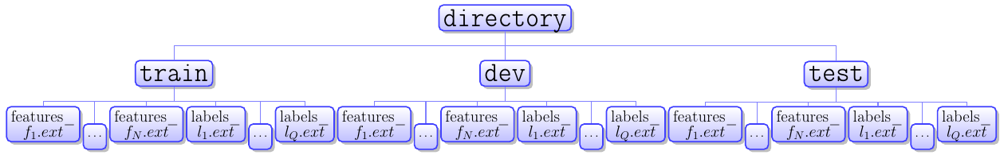

Loader Tutorial¶
The loader module implements a general purpose data loader for python non-sequential machine learning tasks.
Supported Data Types¶
loader is designed to operate on numpy arrays, scipy sparse csr_matrices, and HotIndex objects.
HotIndex objects¶
In the discussion below we distinguish “one hot” meaning a matrix with exactly a single 1 per row and zeros elsewhere
from “many hot”, matrices with only ones and zeros.
In order to address the pervasive need for one hot representations the loader module has some functions for creating
one hot matrices (toOnehot), transforming one hots to indices (toIndex) and determining if a matrix is
a one hot representation (is_one_hot).
Also there is a compact index representation of a one hot matrix, the HotIndex object which has a field to
retain the row size of the one hot matrix, while representing the on columns by their indices alone.
Supported File Formats¶
- .mat:
- Matlab files of matrices made with the matlab save command. Saved matrices to be read must be named data. As of now some Matlab implementations may load the files with the load function but the loaded matrices will have different values.
- .sparsetxt
- Plain text files where lines correspond to an entry in a matrix where a line consists of values i j k, so a matrix A is constructed where \(A_{ij} = k\). Tokens must be whitespace delimited.
- .densetxt:
- Plain text files with a matrix represented in standard form. Tokens must be whitespace delimited.
- .sparse:
- Like
.sparsetxtfiles but written in binary (no delimiters) to save disk space and speed file i/o. Matrix dimensions are contained in the first bytes of the file.- .binary / .dense:
- Like
.densetxtfiles but written in binary (no delimiters) to save disk space and speed file i/o. Matrix dimensions are contained in the first bytes of the file.- .index:
- A saved
HotIndexobject written in binary.
Import and export data¶
export_data: Scipy sparse matrices and numpy arrays may be saved to a supported file format with this function.
import_data: Scipy sparse matrices and numpy arrays may be loaded from a supported file format with this function.>>> from antk.core import loader >>> import numpy >>> test = numpy.random.random((3,3)) >>> test array([[ 0.65769658, 0.22230913, 0.41058879], [ 0.71498391, 0.47537034, 0.88214378], [ 0.37795028, 0.02388658, 0.41103339]]) >>> loader.export_data('test.mat', test) >>> loader.import_data('test.mat') array([[ 0.65769658, 0.22230913, 0.41058879], [ 0.71498391, 0.47537034, 0.88214378], [ 0.37795028, 0.02388658, 0.41103339]])
The DataSet object¶
DataSet objects are designed to make data manipulation easier for mini-batch gradient descent training. It is necessary
to package your data in a DataSet object in order to create a Model object from antk’s generic_model
module. You can create a DataSet with a dictionary of numpy arrays, scipy sparse csr_matrices, and HotIndex objects.
>>> test2 = numpy.random.random((3,4)) >>> test3 = numpy.random.random((3,5)) >>> datadict = {'feature1': test, 'feature2': test2, 'feature3': test3} >>> data = loader.DataSet(datadict) >>> data antk.core.DataSet object with fields: '_labels': {} '_num_examples': 3 '_epochs_completed': 0 '_index_in_epoch': 0 '_mix_after_epoch': False '_features': {'feature2': array([[ 0.3053935 , 0.19926099, 0.43178954, 0.21737312], [ 0.47352974, 0.33052605, 0.22874512, 0.59903599], [ 0.62532971, 0.70029533, 0.13582899, 0.39699691]]), 'feature3': array([[ 0.98901453, 0.48172019, 0.55349593, 0.88056326, 0.87455635], [ 0.46123761, 0.94292179, 0.13315178, 0.55212266, 0.09410787], [ 0.90358241, 0.88080438, 0.51443528, 0.69531831, 0.32700497]]), 'feature1': array([[ 0.55351649, 0.94648234, 0.83976935], [ 0.95176126, 0.37265882, 0.72076518], [ 0.97364273, 0.79038134, 0.83085418]])}
There is a DataSet.show method that will display information about the DataSet.
>>> data.show() features: feature2: (3, 4) <type 'numpy.ndarray'> feature3: (3, 5) <type 'numpy.ndarray'> feature1: (3, 3) <type 'numpy.ndarray'> labels:
There is an optional argument for labels in case you wish to have features and labels in separate maps.
>>> label = numpy.random.random((3,10)) >>> data = loader.DataSet(datadict, labels={'label1': label}) >>> data.show() features: feature2: (3, 4) <type 'numpy.ndarray'> feature3: (3, 5) <type 'numpy.ndarray'> feature1: (3, 3) <type 'numpy.ndarray'> labels: label1: (3, 10) <type 'numpy.ndarray'>
Matrices in the DataSet can be accessed by their keys.
>>> data.features['feature1'] array([[ 0.65769658, 0.22230913, 0.41058879], [ 0.71498391, 0.47537034, 0.88214378], [ 0.37795028, 0.02388658, 0.41103339]]) >>> data.labels['label1'] array([[ 0.95719927, 0.5568232 , 0.18691618, 0.74473549, 0.13150579, 0.18189613, 0.00841565, 0.36285286, 0.52124701, 0.90096317], [ 0.73361071, 0.0939201 , 0.22622336, 0.47731619, 0.91260044, 0.98467187, 0.01978079, 0.93664054, 0.92857152, 0.25710894], [ 0.024292 , 0.92705842, 0.0086137 , 0.33100848, 0.93829355, 0.04615762, 0.91809485, 0.79796301, 0.88414445, 0.72963613]])
If your data is structured so that your features and labels have rows corresponding to data points then you
can use the next_batch function to grab data for a mini-batch iteration in stochastic gradient descent.
>>> minibatch = data.next_batch(2) >>> minibatch.show() features: feature2: (2, 3) <type 'numpy.ndarray'> feature3: (2, 3) <type 'numpy.ndarray'> feature1: (2, 3) <type 'numpy.ndarray'> labels: label1: (2, 10) <type 'numpy.ndarray'>
You can ensure that the order of the data points is shuffled every epoch with the mix_after_epoch function,
and see how many epochs the data has been trained with from the epochs_completed property.
>>> data.mix_after_epoch(True) >>> data.next_batch(1) <antk.core.loader.DataSet object at 0x7f5c48dc6b10> >>> data.epochs_completed 1 >>> data.features['features1'] array([[ 0.71498391, 0.47537034, 0.88214378], [ 0.65769658, 0.22230913, 0.41058879], [ 0.37795028, 0.02388658, 0.41103339]])
read_data_sets: The loading function¶
read_data_sets will automatically load folders of data of the supported file formats into a DataSets object,
which is just a record of DataSet objects with a show() method to display all the datasets at once.
Below are some things to know before using the read_data_sets function.
Directory Structure¶
directory at the top level can be named whatever. There are by default assumed to be three directories below directory named train, dev, and test. However one may choose to read data from any collection of directories using the folders argument.
If the directories specified are not present Bad_directory_structure_error will be raised during loading. The top level directory may contain other files besides the listed directories. According to the diagram:
N is the number of feature sets. Not to be confused with the number of elements in a feature vector for a particular feature set. Q is the number of label sets. Not to be confused with the number of elements in a label vector for a particular label set. The hash for a matrix in aDataSet.featuresattribute is whatever is between features_ and the file extension (.ext) in the file name. The hash for a matrix in aDataSet.labelsattribute is whatever is between labels_ and the file extension (.ext) in the file name.
Note
Rows of feature and data matrices should correspond to individual data points as opposed to the transpose.
There should be the same number of data points in each file of the train directory, and the same is true for
the dev and test directories. The number of data points can of course vary between dev, train, and test directories.
If you have data you want to load that doesn’t correspond to the paradigm of matrices which have a number of data points columns there you may use the read_data_sets folders argument (a list of folder names) to include other directories besides dev, train, and test. In this case all and only the folders specified by the folders argument will be loaded into a DataSets object.
Examples¶
Below we download, untar, and load a processed and supplemented Movielens 100k dataset, where data points are user/item pairs for observed movie ratings.
Basic usage:
>>> loader.maybe_download('ml100k.tar.gz', '.', 'http://sw.cs.wwu.edu/~tuora/aarontuor/ml100k.tar.gz')
>>> loader.untar('ml100k.tar.gz')
>>> loader.read_data_sets('ml100k).show()
reading train...
reading dev...
reading test...
dev:
features:
item: vec.shape: (10000,) dim: 1682 <class 'antk.core.loader.HotIndex'>
user: vec.shape: (10000,) dim: 943 <class 'antk.core.loader.HotIndex'>
words: (10000, 12734) <class 'scipy.sparse.csc.csc_matrix'>
time: (10000, 1) <type 'numpy.ndarray'>
labels:
genre: (10000, 19) <type 'numpy.ndarray'>
ratings: (10000, 1) <type 'numpy.ndarray'>
genre_dist: (10000, 19) <type 'numpy.ndarray'>
test:
features:
item: vec.shape: (10000,) dim: 1682 <class 'antk.core.loader.HotIndex'>
user: vec.shape: (10000,) dim: 943 <class 'antk.core.loader.HotIndex'>
words: (10000, 12734) <class 'scipy.sparse.csc.csc_matrix'>
time: (10000, 1) <type 'numpy.ndarray'>
labels:
genre: (10000, 19) <type 'numpy.ndarray'>
ratings: (10000, 1) <type 'numpy.ndarray'>
genre_dist: (10000, 19) <type 'numpy.ndarray'>
train:
features:
item: vec.shape: (80000,) dim: 1682 <class 'antk.core.loader.HotIndex'>
user: vec.shape: (80000,) dim: 943 <class 'antk.core.loader.HotIndex'>
words: (80000, 12734) <class 'scipy.sparse.csc.csc_matrix'>
time: (80000, 1) <type 'numpy.ndarray'>
labels:
genre: (80000, 19) <type 'numpy.ndarray'>
ratings: (80000, 1) <type 'numpy.ndarray'>
genre_dist: (80000, 19) <type 'numpy.ndarray'>
Other Folders:
>>> loader.read_data_sets('ml100k', folders=['user', 'item']).show()
reading user...
reading item...
item:
features:
genres: (1682, 19) <type 'numpy.ndarray'>
bin_doc_term: (1682, 12734) <class 'scipy.sparse.csc.csc_matrix'>
month: vec.shape: (1682,) dim: 12 <class 'antk.core.loader.HotIndex'>
doc_term: (1682, 12734) <class 'scipy.sparse.csc.csc_matrix'>
tfidf_doc_term: (1682, 12734) <class 'scipy.sparse.csc.csc_matrix'>
year: (1682, 1) <type 'numpy.ndarray'>
labels:
user:
features:
occ: vec.shape: (943,) dim: 21 <class 'antk.core.loader.HotIndex'>
age: (943, 1) <type 'numpy.ndarray'>
zip: vec.shape: (943,) dim: 1000 <class 'antk.core.loader.HotIndex'>
sex: vec.shape: (943,) dim: 2 <class 'antk.core.loader.HotIndex'>
labels:
Selecting Files:
>>> loader.read_data_sets('ml100k', folders=['user', 'item'], hashlist=['zip', 'sex', 'year']).show()
reading user...
reading item...
item:
features:
year: (1682, 1) <type 'numpy.ndarray'>
labels:
user:
features:
zip: vec.shape: (943,) dim: 1000 <class 'antk.core.loader.HotIndex'>
sex: vec.shape: (943,) dim: 2 <class 'antk.core.loader.HotIndex'>
labels:
Exceptions¶
Bad_directory_structure_error
Mat_format_error
Sparse_format_error
Unsupported_format_error